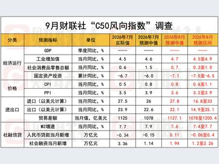
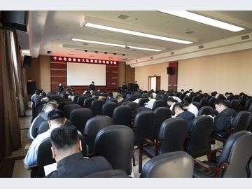

02
3000亿元“增厚家底” 金融央企底气更足
11月18日，财政部发布公告称，1500亿元的中央金融机构注资特别国债（二期）已完成招标。

11月4日，十四届全国人大常委会第二十五次会议分组审议了国务院关于金融工作情况的报告。
11月18日，财政部发布公告称，1500亿元的中央金融机构注资特别国债（二期）已完成招标。
日前，工商银行、农业银行、中国银行、建设银行、交通银行、邮储银行等召开会议，传达学习党的二十届五中全会精神，研究部署贯彻落实举措。
本文节选自《2026中国金融业竞争力研究报告》，该报告在2026年11月21日举办的“第二十一届21世纪金融年会”上正式发布。
财联社9月8日讯（记者 夏淑媛） 新一期财联社“C50风向指数”结果显示，8月信贷或季节性回升，但难改少增格局，市场机构预测中值为0.11万亿元；

大量的中小银行，成为了「夹心层」——想要进一步争夺优质客群，价格拼不过；如果退一步去服务风险更高的客群，账面就可能更加入不敷出。
眼下，普湾经济区科创产业项目、金普新区市政道路工程、小窑湾教育扩建民生工程同步抢抓施工黄金期，聚焦产业赋能、交通提质、教育惠民，以实打实的建设成效…

好消息从全省各地接踵而至。在沈阳，首款国产新世代BMW iX3在宝马沈阳生产基地正式投产并启动交付；

为持续优化营商环境，优化公安政务服务便民举措，切实解决企业办事堵点难点，近日，鞍山市公安局千山分局主动靠前、精准服务，针对辖区企业集中办证需求…

财联社11月19日讯（编辑 杨斌）今日，资金面回暖，债市继续走强，10年与30年国债收益率均向好。

财信证券研报认为，A股政策底已确认，市场仍处磨底阶段，美股或延续调整。整体来看，大类资产配置的推荐顺序为人民币＞美元＞中债＞美债＞A股＞原油＞黄金＞美股。